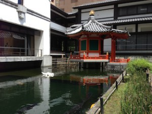

Shijô-dori Street is one of the main streets in Kyoto City, with a lot of shops and restaurants. It is always bustling with people. Not only Japanese but many foreigners are also walking in the street, looking for their destinations.
I’ll show you some photos of major sites in this area and give some practical information!
First I reserved a hotel room at Super Hotel in Shijô Kawaramachi. This is a chain hotel. Very reasonable and located with easy access to everything! The hotel is also known for its effort to be eco-friendly in the operation. For example, if you stay several days and decline room cleaning, you’ll get a bottle of mineral water for free!!! There are many other surprises. I recommend this hotel as a start point of your trip.
・Nishiki-Tenmangu Shrine （錦天満宮） website
Tenmangu Tenjin (Sugawara-no-Michizane) is enshrined here. Michizane was an eminent scholar and politician of the Heian Period of Japan (845–903). He was given preferential treatment by Emperor Uda, and then promoted to Udaijin (Minister of the Right) under the reign of Emperor Godaigo. He was leading a successful life. But he was also an object of jealousy to his colleagues. After being falsely charged by Fujiwara Tokihira, Sadaijin (Minister of the Left), Michizane was demoted to Governor of Dazaifu, the imperial office governing Kyushu, and then died there. After his death, a succession of natural disasters occurred, and they were attributed to a curse placed by Sugawara-no-Michizane. People were afraid of his “Onryo” (vengeful ghost). Then Tenmangu Shrine was constructed to appease his sprit.
He is today worshiped as the god of learning and business, Tenman-Tenjin, often shortened to Tenjin.


Try “karakul-mikuji” (a mechanical messenger of a fortune-telling slip).

{kind=link}
“Nade-Ushi” (photo on the left) is a messenger of Tenjin God. Stroke it gently, your academic skills will improve.
The Torii (Shinto shrine gate) of this Tenmangu is very unique. Since the buildings around the shrine were constructed without being calculated well, the Torii had to penetrate the wall of the neighboring buildings! Click on the image on the right.
・Tako Yakushi-do Hall（蛸薬師堂）
A young monk named Zenko once lived in this temple. He had a heavily sick mother. One day he asked his mother what she wanted to eat, and she said she wanted to eat “tako” (octopus). He was at a loss when he heard his mother’s wish because monks were not allowed to buy or eat living things. He was thinking and thinking, and then finally decided to buy octopus for his weak mother. However, some people witnessed him buying octopus at the market and blamed him for his bad deed. Zenko was really troubled and prayed hard. Then the “tako” in his hand turned into the Lotus Sutra, giving out flashes of light. His mother was also covered with the light and then recovered from her illness. Since then, this temple has been worshiped by many people for recovery from diseases and removal of troubles.


・Seishin-in Temple（誠心院） Website
The first chief priest of this temple is said to be Izumi Shikibu. She was a mid Heian period Japanese poet. She had a sequence of love affairs at the Imperial court. Her life was full of ups and downs.
・Seigan-ji Temple（誓願寺） Website
This temple was constructed during the Asuka period (592–710) and moved to Heiankyo (Kyoto) later. However, the present main hall was built in 1964, so it is rather modern. The former priest, Sakuden-shounin, is considered to be the father of the art of Rakugo (comic storytelling). He was a monk at the time of the Sengoku period (Warring States/15th and 16th century), and was known as a great man of letters and master of tea ceremony.
Izumi Shikibu, who lost her daughter, shut herself up in this temple, and later she made a hermitage, which was the origin of Seishin-in.
・Yada-ji Temple（矢田寺）
A merciful Ojizo-san (Jizo Bodhisattva) is enshrined in this temple. This Ojizo-sama even visits the infernal regions to save sinners. The bell of Rokudochin-no-ji Temple (Kyoto part 2) is to welcome returning ancestral spirits to this world during the o-bon week, and the bell of Yada-ji temple is rung when the spirits go home.

・Hon-no-ji Temple（本能寺） Website
Hon-no-ji Temple is one of the most famous temples in Japan. We know it very well as Hon-no-ji no Hen (本能寺の変) or The Hon-no-ji Incidence. In 1582, Japanese daimyo Oda Nobunaga was forced to commit suicide at this temple when he was attacked by his samurai general Akechi Mitsuhide.
In this incident there are many mysteries, so many Japanese are fascinated by the history of that time.
The Hon-no-ji Incidence：
Oda Nobunaga almost consolidated centralized power in Japan under his authority. Surviving the Sengoku period (Warring States), he overpowered many formidable daimyos in central Japan, and he was moving on into the west. For example, one of his generals, Hashiba Hideyoshi, who later achieved ruling power after Nobunaga, was sent to attack the Mori clan occupying the present-day Hiroshima. Like this way, Oda sent his samurai generals into all directions of Japan.
Nobunaga was staying at Hon-no-ji temple on the day of the coup. Hon-no-ji Temple is said to have been constructed to serve as an accommodation facility for Oda Nobunaga. After a time, the main hall was reconstructed for reinforcement, and a moat and a stone wall were added for security. It shows how cautious and vigilant Nobunaga was. However on the day when he was attacked, there were only 20 to 30 servants around him. Why wasn’t he more careful like always? It is one of the mysteries of Nobunaga…
Akechi Mitsuhide was one of the most competent samurai generals serving Nobunaga. Mitsuhide was ordered to go to the present-day Kagawa, Shikoku, to help Hashiba Hideyoshi to attack Takamatsu Castle, but he gathered his samurai soldiers at Kameyama Castle and said to them, “our enemy is at Hon-no-ji Temple!” They encircled Hon-no-ji temple and tried to kill Nobunaga sleeping in one of the rooms of the temple. Realizing something unusual, Oda felt hopeless and finished his life by himself. But his body was not found…
The reason why Mitsuhide betrayed Nobunaga is not clear. There are several hypotheses. Maybe it is because Mitsuhide was always humiliated by Nobunaga. It is kind of a revenge. Or maybe because he was ambitious to get ruling power. Some historians also say it may be because there was someone else behind this incident, who was controlling everything…We don’t know…
After the coup, Mitsuhide was chased after by Hideyoshi and killed by a farmer in the bamboo forest. At that time poor farmers killed samurai generals taking to their heels. It is called “mushagari” (武者狩り). If a defeated general was weak enough, even a farmer could kill him using a bamboo spear. The armor and swords were then taken away and sold to make money.


・Takamtsu-shinmei jinja（高松神明神社）
Do you remember the story about Emperor Sutoku that I introduced in Kyoto part 2? He was defeated in the battle for the Imperial Throne. This shrine is dedicated to Emperor Goshirakawa, who won the battle. When he was 7 years old, Takamatsu Palace was constructed and this shrine was also created as a tutelary shrine of this palace. The battle between the two emperors also encouraged samurai warriors to gain power. The Taira clan and the Genji clan, who both later became important personages in Japanese history, sided with Emperor Goshirakawa. Realizing their power was strong enough to change the tide, they started to take advantage of the situation and came to take ruling power.
It is said that if you stroke your child on the head after stroking the stone which is used as the base of the Jizo hall, your child will receive wisdom.


・ Rokkaku-do Hall（六角堂） Website
Rokkaku-do literally means “hexagonal building.” This temple is said to have been founded by Prince Shotoku (574–622). He was appointed as regent in 593 by Empress Suiko, his aunt, and he established a centralized government. “The Twelve Level Cap and Rank System” and “Seventeen-article Constitution” were attributed to him. He introduced the continental culture, which was more advanced than that of Japan of that time, and he also strongly believed in Buddhism.
However there are also many mysteries about him. Some historians even say that Shotoku-taishi didn’t exist.

The origin of Japanese flower arrangement:
On the north side of Rokkaku-do, there is a site where there was once a pond. Legend has it that Shotoku-taishi was purifying himself there. After that, a small lodge was built by the pond, and a monk was living in it. It came to be called “Ike-no-bo” (a monk’s lodge by the pond). Today it is the name of the head family of a school of Kado (flower arrangement ) in Japan. The ancestors of the Ike-no-bo family were always offering flowers to the statue of Buddha, in the morning and evening, and then they became known as masters of flower arrangement.

Heso-no-ishi (Navel Stone):
Heso-no-ishi or Heso Ishi is said to be the center of Kyoto. When the capital was moved from Heijyokyo (Nara) to Heiankyo (Kyoto), Rokkaku-do was situated in the middle of the street. Emperor Kanmu sent a messenger to Rokkaku-do to make a request. The messenger said looking at the temple, “we’d be happy if you could move a little either to the south or to the north, otherwise we have to move you somewhere else.” And then suddenly the sky got covered with clouds and a strange wind occurred. The messenger was scared, thinking that Kan-non bosatsu (Bodhisattva) got angry. Then, Rokkaku-do moved 15 cm to the north by itself. However the stone that was supporting Rokkaku Hall was left alone where it was. And this is the origin of “Navel Stone.”
Matchmaking willow tree:
There is a willow tree in the precinct of the temple. Emperor Saga (786–842), who deeply worshiped this temple, one day prayed that he could find a princess who was pure both in her mind and appearance. Then, in his dream, Nyoirin Kan-non appeared and told him that he would find a woman under the willow in front of Rokkaku temple hall. After he found the beautiful woman under the tree, he welcomed her as his wife.

There is also a small tea house at this temple. They serve green tea and Heso Ishi mochi (sweet mochi cake shaped “Rokkaku” hexagon). You can find some souvenir goods too.
Where to eat!
To visit these temples and shrines, you need a lot of energy. Shijyo-kawara machi also has a variety of cafes and restaurants. Finding good restaurants is always difficult, but I feel in Kyoto good restaurants are everywhere, whether it’s casual or expensive.
TAWAWA: You can find this restaurant in Shimpukan (新風館) shopping mall on Karasuma-dori street. It is situated on the third floor. During lunch time it is all-you-can-eat style (1300 yen/90 minutes). For example, you choose your main dish from Meat/Fish, Pizza, or Pasta, and you can take as many other side dishes as you want. Drinks are free too. They use a lot of Kyoto vegetables and prepare many kinds of “obanzai” dishes (Kyoto-style home cooking).
Pizza grilled in the stone oven is excellent, and you can taste various obanzai foods.
Ichiran-ramen（一蘭ラーメン）: It is located on Tako-yakusi dori street. They serve Tonkotsu ramen (noodles with pork-based soup). This chain ramen shop comes from Kyushu and has a very unique style. There are several rows of counter tables, and each counter table is divided by partitions. It is like a stable! My husband and I were laughing !!! Their menu is only their special Tonkotsu ramen, but they arrange the richness of the soup, the hardness of noodles, etc., according to your taste. You will be given a form which has several questions about your preferences.

Their ramen was excellent. I wish they would open one in Paris someday…
Katsukura（かつくら）: this is a Tonkatsu (deep-fried pork) restaurant originated from Kyoto. We think Tonkatsu is a little heavy in the stomach, but Katsukura’s Tonkatsu is rather light. You feel you eat a lot, but it doesn’t feel heavy. They use 100% Japanese pork, and the frying oil (non-calorie) and bread crumbs are both their original. You can have as much rice and thinly shredded cabbage as you want, too. They are well selected (Japanese brand). Their Tonkatsu sauce is also special. They use a lot of red wine, and add apple and date to make it smooth and rich in taste.

I ordered the one recommended. It came with pork and shrimp! The waitress kindly told me how to prepare the special sauce. First, you grind sesame, and then you add their special sauce to it. It is really delicious.
Katsukura in Shijo-kawara-machi is found on Teramachi-dori street. It is just at the entrance of the Teramachi shopping arcade. We enjoyed tasting their tonkatsu at the counter table. It is fun to see the chefs frying a lot of pork!
Nishiki-shijyo (錦市場/Nishiki Market): Don’t forget to visit this tantalizing street. It is also called “the kitchen of Kyoto.” A number of shops stand along the street. You can find everything here, meat, fish, sushi, Kyoto vegetables, green tea, sweets and many many more.

Goma-fuku-do（ごま福堂）：This shop is specialized in goma (sesame) foods. My husband loves goma jam!

Miki-keiran（三木鶏卵）：they sell a variety of egg dishes and sweets. One of their well-selling products is “an-pan” (bun with sweet paste in it). It is very good!

You can find many more interesting things here. Enjoy shopping and tasting Kyoto specialities. You’ll never get tired or bored for eating in Kyoto. Every day you should try something new!